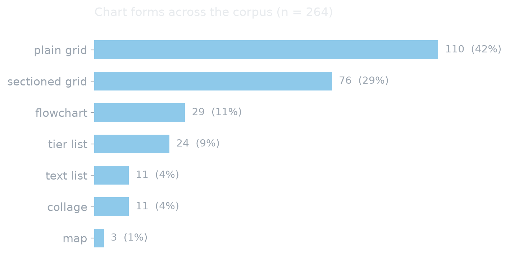
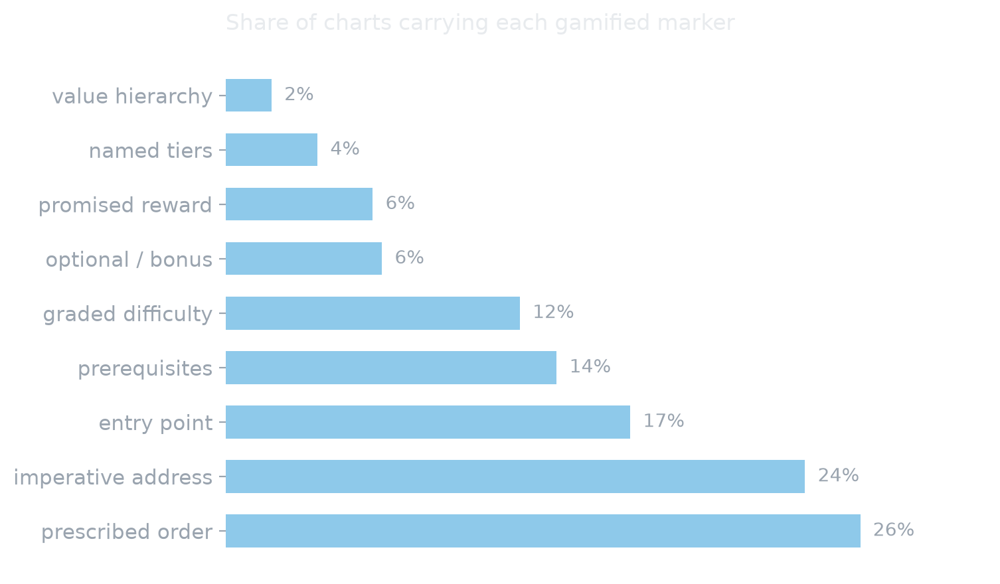
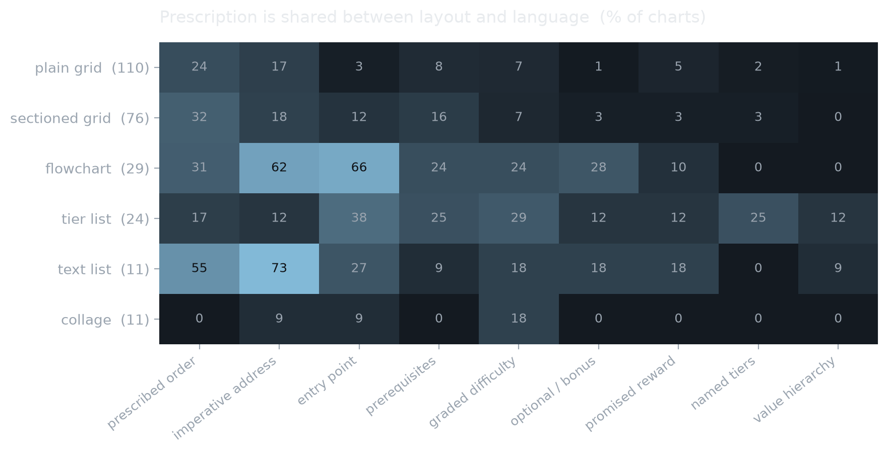
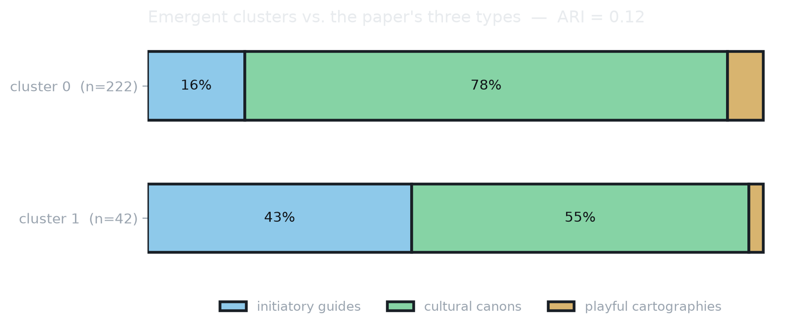
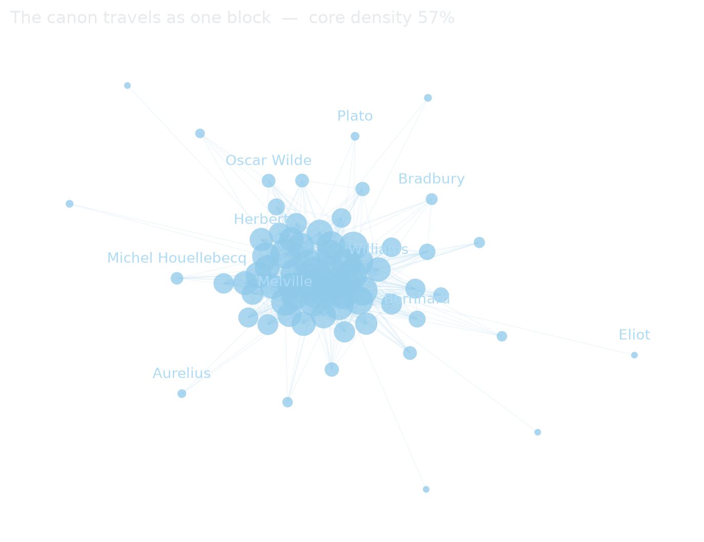
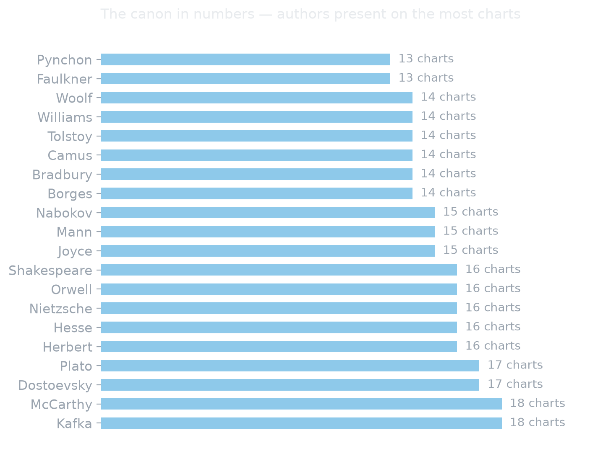
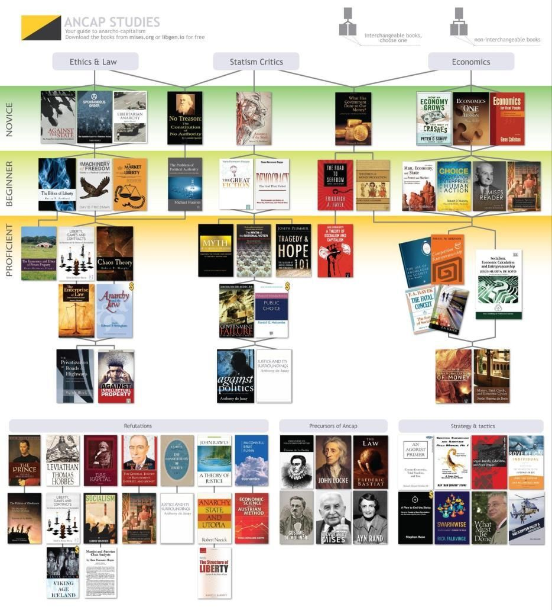
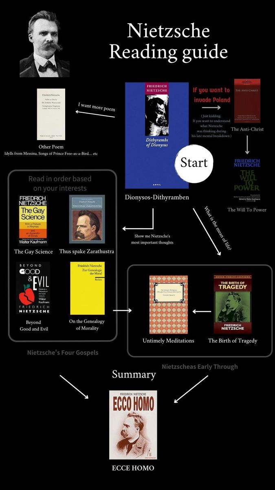
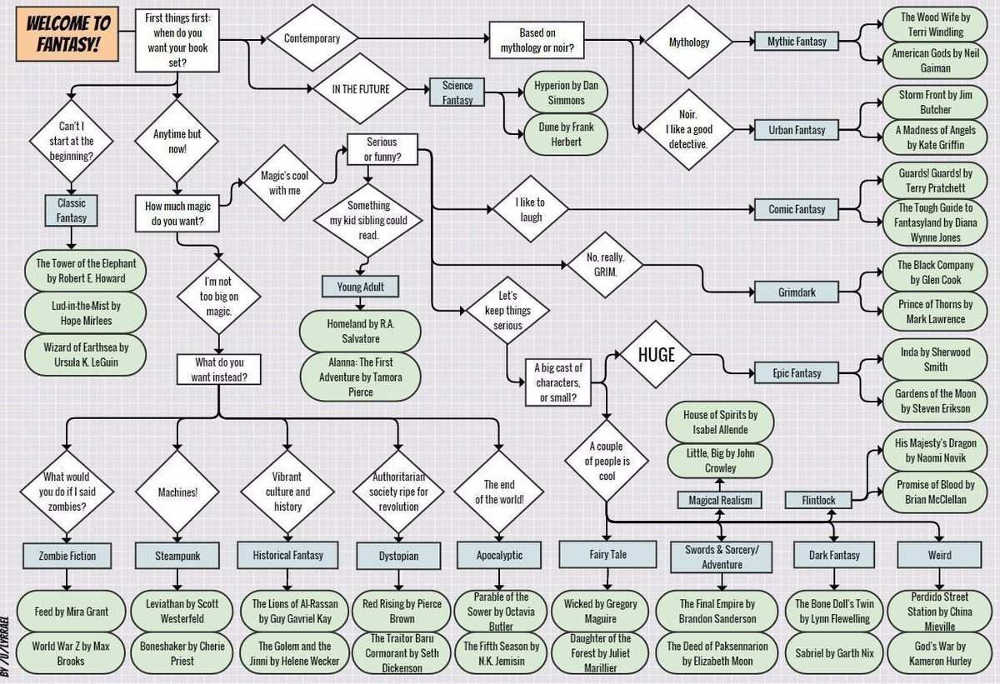

“That’s kino anon” — reading charts as gamified devices on 4chan’s /lit/.
A communication-research study of the “charts” circulating on 4chan’s Literature board. How do these playful visual reading lists frame and diffuse literary radicalism inside an anonymous online counter-public? The original qualitative analysis has since been extended into a reproducible pipeline that measures the whole corpus — and the numbers complicate the story.
When a reading list becomes political communication.
On /lit/, users share charts — small PNG or JPEG images that rank authors and books along logics of progression and hierarchy. The paper argues that these visuals do more than recommend references: they structure paths of initiation and distinction within an anonymous public, turning literature into an indirect political language.
Reading is reframed as a quest: you climb from tier to tierProgression, unlock authors and become “proficient”Reward, follow arrows, levels and colour codesSimplification, and enter the closed circle of “real readers”Community.
Reading /lit/ as a digital counter-public.
The analysis mobilises theories of the public sphere and its fragmentation to make sense of an anonymous, affective and highly symbolic discursive arena.
Fragmented public spheres
Bennett & Pfetsch (2018): political communication now unfolds across dispersed micro-publics rather than one common arena.
Counter-publics
Fraser (2001): subordinate groups build parallel discursive arenas to circulate their own counter-discourses — /lit/ as a contemporary illustration.
Pseudo-public sphere
De Zeeuw (2024): spaces that imitate the mechanisms of public debate without honouring its deliberative rules — where nothing is quite serious, nothing quite play.
Gamification & ludification
Deterding et al. (2011) and Raessens (2014): game-design logics applied to non-game contexts, reconfiguring culture as a playful, identity-driven pursuit.
Framing
Entman (2004): to frame is to select and make salient. The chart delimits what should be read, thought and believed before any argument is made.
Trolling & transgression
Nagle (2017): a “culture of transgression” that normalised reactionary discourse behind cynicism and memetic play.
What 264 charts actually do.
The original study read a sample closely. The pipeline now reads all of it: every chart was OCR’d locally, its blocks and sections rebuilt geometrically, its text screened for a lexicon of gamification, and its form coded on the image. The findings below refine the paper’s argument rather than confirm it — which is what measurement is for.






Four recurring gamified mechanics.
Charts were first coded against the game-design elements described by Deterding, Dixon, Khaled & Nacke (2011). Each mechanic is given below with what the corpus-wide measurement now says about it.
Progression
From novice to expert: the reader advances level by level along a literary path, choosing to stop, continue or branch off.
Measured · 26 % prescribe an order, 17 % name an entry point
Symbolic reward
Mastery of a corpus is staged as an achievement — becoming “proficient”, earned through the “grind” of reading.
Measured · rarer than expected — 6 % promise a status, 4 % name tiers
Cognitive simplification
Ideological complexity is turned into clear visual schemas: arrows, tiers, categories and colour codes.
Measured · only 13 % actually draw arrows; simplification is mostly typographic
Community identification
A ready-made “panoply” of authors that rewards the status of the initiate — the “real reader” inside a closed circle.
Measured indirectly · a 56 %-dense canon block is what “the panoply” looks like
Three types of chart — and what survived the test.
Beyond their shared mechanics, the charts were read as falling into three framing structures. Clustering the full corpus supports the first two and questions the third.
Initiatory guides
Teaching codes — arrows, chronological order, practical advice. A graded, gamified learning experience where each reading unlocks the next and builds a community of self-taught experts.
Confirmed · 53 charts, and the pole that structures cluster 1
Cultural canons
A closed ideological library (traditionalist, libertarian, communist…) whose works reinforce one another. The chart becomes a framing device (Entman): visual hierarchy replaces rational deliberation.
Confirmed & dominant · 197 charts, 75 % of the corpus
Playful cartographies
Decision trees and RPG-style skill trees where the user “chooses” a route. The apparent freedom of the player masks an orientation framed in advance by the chart’s author.
Not separable · 14 charts; striking individually, not a statistical family
Three charts, one gamified form.
The three examples below span the ideological spectrum — libertarian, philosophical and purely literary — yet share the same gamified grammar. That is precisely the argument: the message lies as much in the form of the chart as in its content. Click a chart to open it full size.

Ancap Studies
Novice → Beginner → Proficient tiers: the clearest example of the progression mechanic.

Nietzsche Reading Guide
A single-author library with an ornamented aesthetic and a “Start” node — prescription as framing.

Welcome to Fantasy!
A decision tree of diamond nodes — an RPG-like map where the reader “chooses” a route.
Charts reproduced from the study’s corpus for the sole purpose of academic analysis. They are user-made artefacts collected on 4chan’s /lit/ board and do not reflect the author’s views.
A pipeline that runs on a laptop.
Everything below was written, run and measured — not planned. The constraint was deliberate: no remote API, no key, no per-use cost, so the whole analysis can be replayed by anyone on an ordinary machine. Where a step turned out not to work, it was measured and dropped rather than quietly kept.
Text extraction — 264 charts in 11 minutes
Charts are huge images (up to 7 600 px) whose text is small. Running OCR on a downscaled image loses the captions entirely, so each chart is cut into horizontal bands and read at full resolution. Two engines are supported: the OS-native one by default, and Surya, fully open source, as a control that reproduces the same result on any system — 75× slower, which is why it is a control and not the default.
Structure by geometry, not by model
Which lines belong to the same block, and which heading governs them, is a question of geometry: the OCR coordinates already contain the answer. Reconstructing sections deterministically takes under a second per chart, can hallucinate nothing, and returns exactly the same result on every run. The same task handed to a local vision model took eleven minutes per image and mistook section headings for books.
Gamification markers — a versioned lexicon
Nine registers are searched by regular expression over each chart’s full text, and every hit is stored with the line that produced it. The lexicon is a plain editable file, not code: it is the study’s instrument, so it must be open to challenge. The evidence trail matters — on a Dante chart, the 27 “imperatives” turn out to be quoted verses of the Commedia, not the chart addressing its reader.
Emergent typology, not an imposed one
Asking a model “what type of chart is this?” imposes a taxonomy decided in advance. Instead each chart is described by 19 measurable variables — proportions, text density, row and column regularity, typographic dispersion, line length, plus the nine markers — and the groups are allowed to emerge. The coded forms and the wiki’s categories are held back to judge the result, never to build it.
Author networks, after a cleaning pass
Author names come from an “Author: Title” pattern that also produces false authors — History, ECONOMICS — and split forms, where Kafka and Franz Kafka count as two nodes and halve each other’s centrality. Both are corrected before any measurement, and every discarded form and merged variant is logged for inspection.
Reliability, reported rather than assumed
Automated form classification was tested against a full manual coding of all 264 charts and rejected on the evidence: Krippendorff’s α = 0.078 for layout type, barely above an annotator who answers the same label every time. The same model detects drawn arrows at α = 0.842 and is kept for that alone. A negative result, measured and reported, is worth more than an unexamined variable.
Known limits
Books that are only covers
Only 24 % of extracted works carry an identifiable author. On charts where books appear solely as cover images with no caption, no OCR can recover a title — those charts are structurally under-represented in the network.
Provenance of the form coding
The 264 forms were coded by a large vision-language model, not by a human and not by the local pipeline. It is external validation and is declared as such; the reproducible pipeline itself stays fully local.
No repost counts
The corpus comes from the wiki, not from threads, so actual recirculation cannot be measured. Content overlap between the annual “Top 100” editions is a floor, not a ranking.
Text volume bias
Lexical marker scores grow mechanically with the amount of text on a chart. Comparisons between forms of very different verbosity require normalisation first.
Findings and an opening.
Radicalism as an economy of symbols
The visual, gamified form of the charts makes literary radicalism seductive, shareable and culturally valued. Diffusion owes less to explicit militancy than to an economy of symbols and provocation that rewards subcultural belonging — radicalism that “exposes without imposing”.
Conformity before initiation
The corpus-wide measurement shifts the emphasis. Charts classify far more than they guide: three quarters are catalogues, and the canon behaves as a single 56 %-dense block where citing one author entails the others. Where prescription does appear, it travels through language as much as through layout.
What a negative result is worth
Two claims were tested and revised on the evidence: a local vision model cannot classify chart forms (α = 0.078), and the third theoretical type does not separate out empirically (ARI = 0.12). Reporting both is what makes the remaining findings credible.
Next research
Almost no scholarship targets /lit/ directly. Two threads follow: analysing 4chan’s own structure — code, UI/UX, affordances — and tracking the annual “Top 100” series as a time span, to see whether the canon actually moves.